Represent
2022 · Three-channel video
Represent is a three-channel video by Nickii Schamborski, 2022.
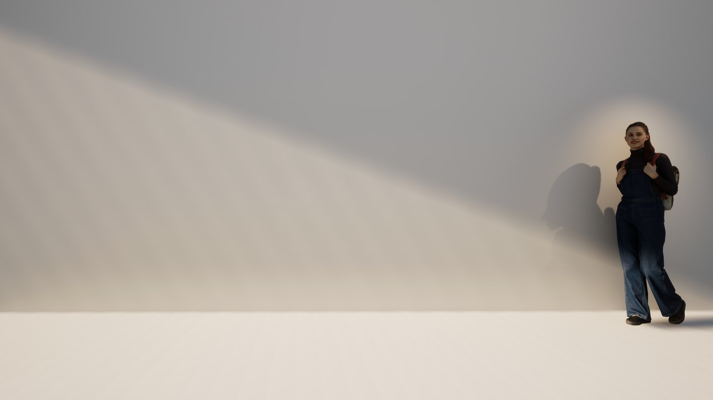
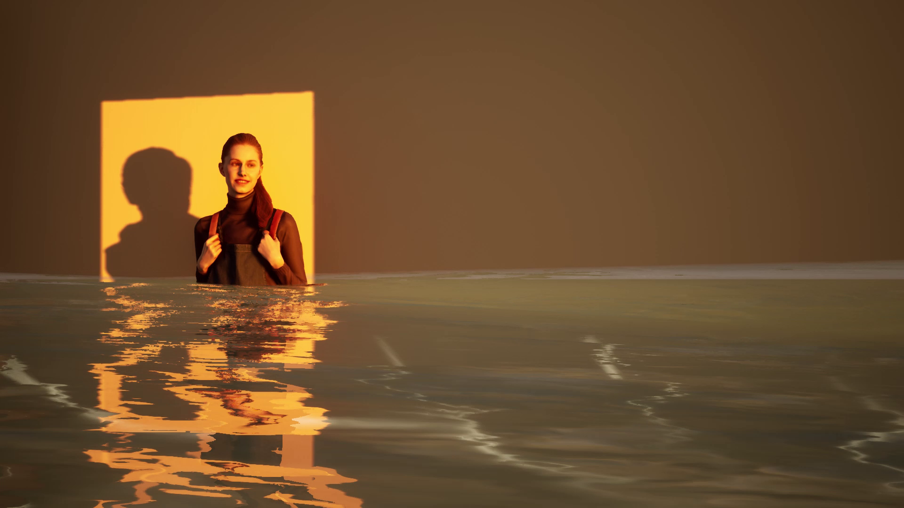
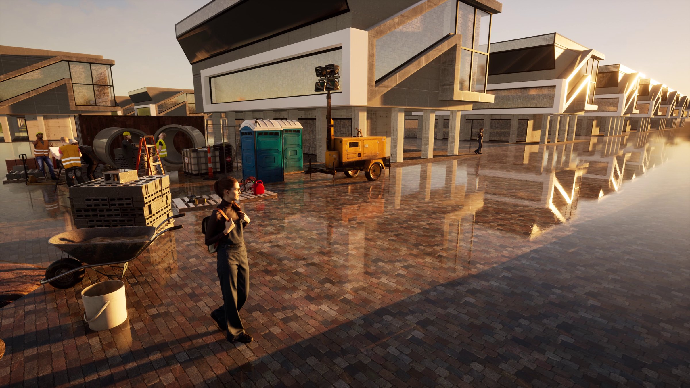
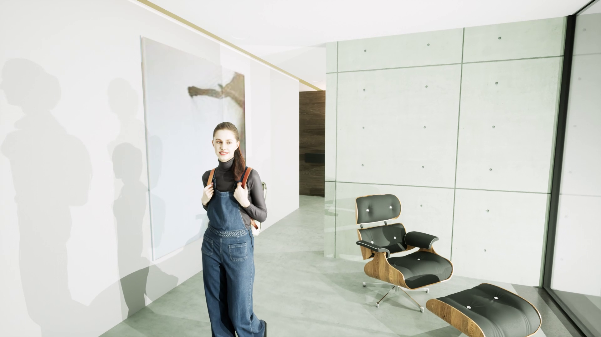
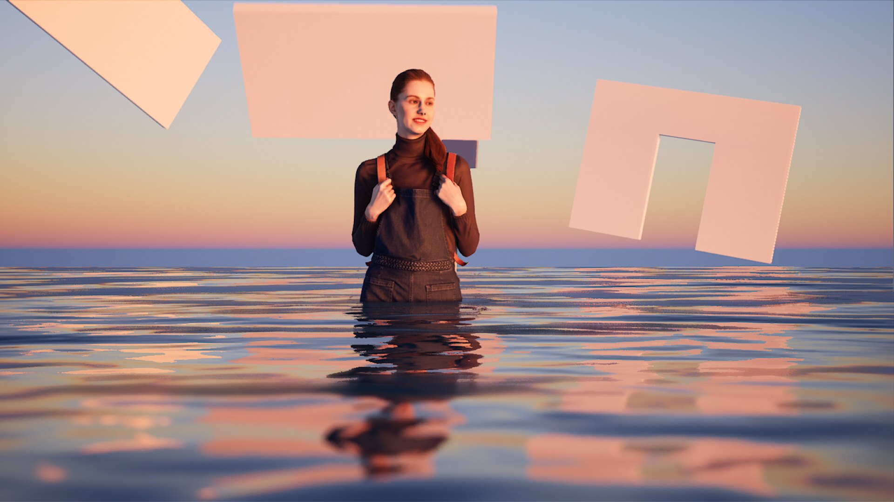
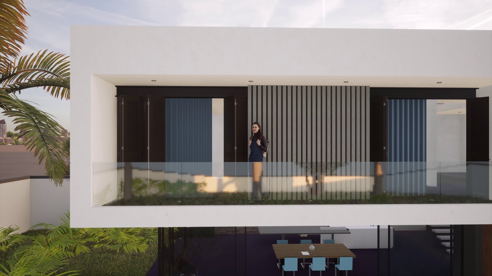
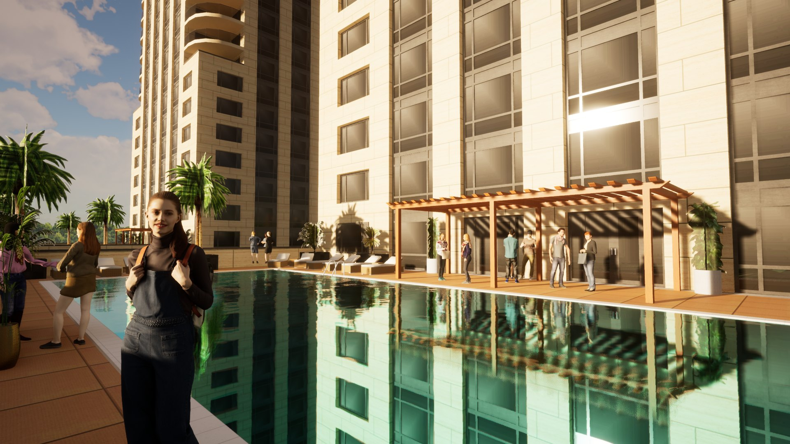
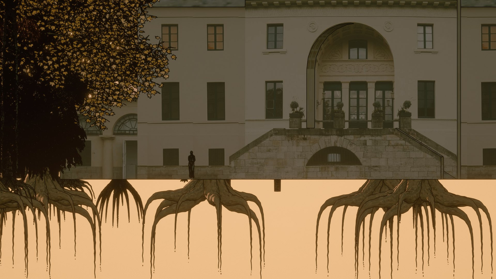
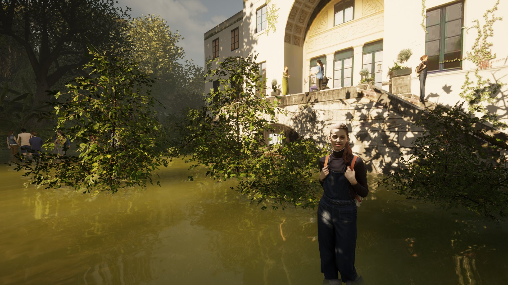
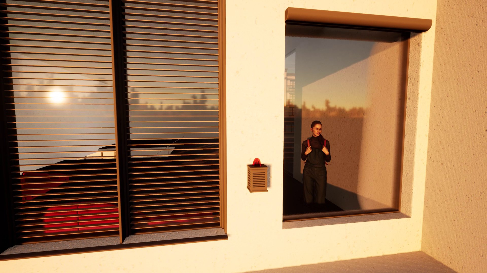
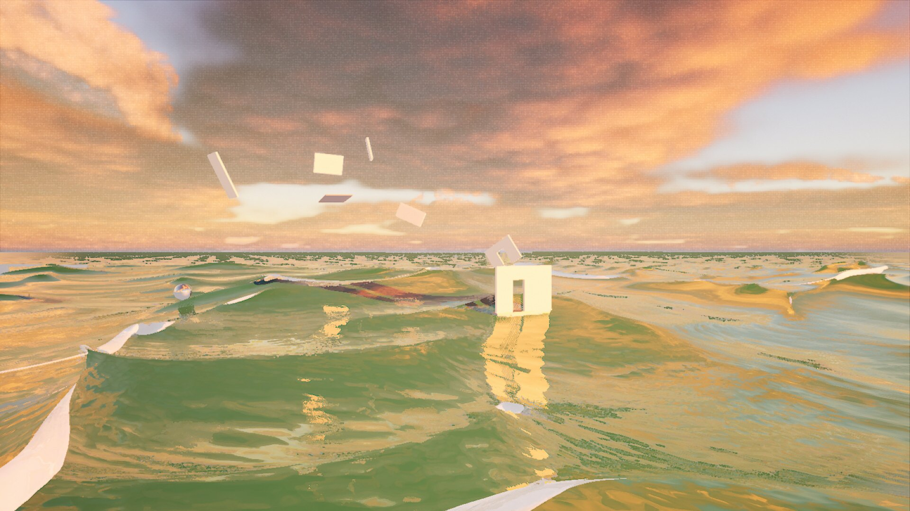
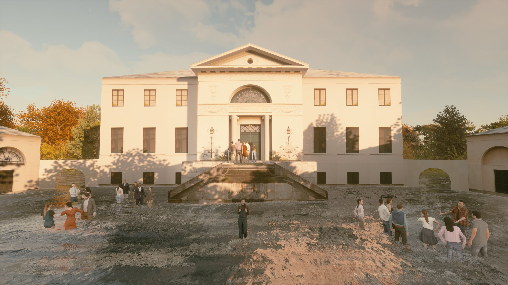
About the work
Using Shirley, a 3D model for architectural simulations, this work raises questions of power and representation. In the short story, Shirley flees her function and declares her resistance to the ruling system of architecture and its inherent distribution of power. While pursuing the political goal of erasing herself and her representation, she faces the paradox of not wanting to be forgotten at the same time. The film takes place mainly inside the Kunstverein Braunschweig; the story is complemented by digital prints showing exterior views of the Kunstverein.
Zur Arbeit
Anhand von Shirley, einem 3D Model für Architektursimulationen, stellt diese Arbeit Fragen nach Macht und Repräsentation. In der Kurzgeschichte ergreift Shirley die Flucht vor ihrer Funktion und verkündet ihren Widerstand gegen das herrschende System der Architektur und die inherente Machtverteilung. Während sie dem politischen Ziel nachgeht, sich selbst und ihre Repräsentation auszulöschen, steht sie vor dem Paradoxon, gleichzeitig nicht vergessen werden zu wollen. Die Handlung des Films spielt sich hauptsächlich im Innenraum des Kunstverein Braunschweigs ab; ergänzt wird die Geschichte durch Digitaldrucke mit Außenansichten des Kunstvereins.
Details
- Year
- 2022
- Type
- Three-channel video
- Specs
- 6K, Dolby surround, 08:32 min
- Institution / place
- Kunstverein Braunschweig